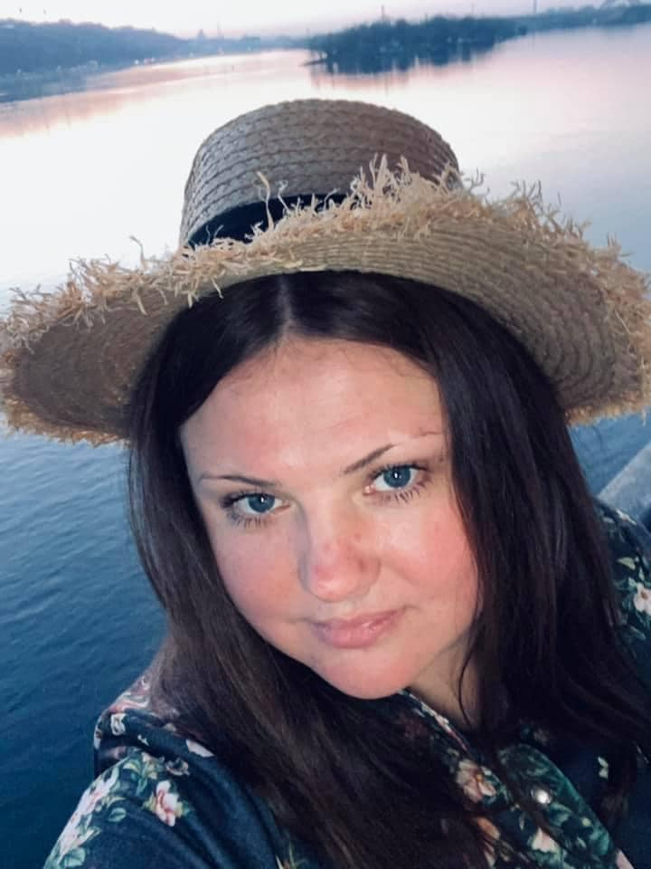

Head of Corporate Clients Department
Iryna Yelunina
Invent, produce and deliver Business souvenirs, corporate gifts and
promotional
products with your logo
Projects
-
Diaries
-
Reusable masks
-
Custom hoodies
Work Experience
Head of Corporate Clients Department,
LLC VIP PRINT
May 2010 - up to now | Ukraine
-
Greating an atmosphere of collaboration between team members and
clients.
-
Trained 6 employees in professional skills and onboarded them
and completed over 2000 projects.
-
Making company processes clear and transparent and increase
customer satisfaction and cooperation.
Sales Manager, LLC Fifth Element
October 2008 - May 2010 | Ukraine
- Sales and negotiation.
- Customer base development.
- Expanding the representation of the company's products.
- Receivables control.
- Mentoring and training new employees.
History and geography teacher, Sasynivska school
August 2000 - December 2001 | Ukraine
- Organization of the educational process.
- Knowledge of pedagogical theory and psychology of teaching.
- Solving educational and methodological problems.
- Maintaining training documentation.
Education
Ukrainian Mediation Center
Basic mediation skills
September 2020 - June 2021 | Ukraine
Poltava State Agrarian Academy
Manager-economist, specialist
September 2007 - June 2009 | Ukraine
Poltava V.G. Korolenko National Pedagogical University
History and geography teacher, specialist
September 2000 - June 1995 | Ukraine
Activities and interests
I started as a souvenir sales manager and still love this part of my
job. Travel addict, learning to make websites, cats fan.
Soft Skills
- dependable
- а quick learner
- hardworking
- open to change
- able to prioritize
- have planning skills
- keep deadlines successfully
- detail-oriented
- natural leader
- adapt well to new situations
- а team player
- well-organized
Tech Skills
- Word, Exsel, Internet
- Terrasoft
- Adobe
- GIT
- Java
- Basic German, Intermediate English
- Driving License (Category B, C)
Contacts
C: +38 097 906 67 64
E: lucky.asterisk@gmail.com